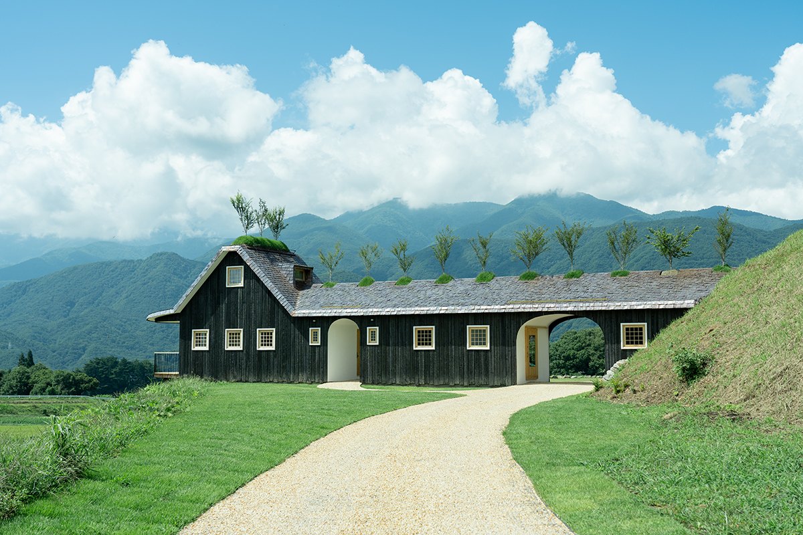
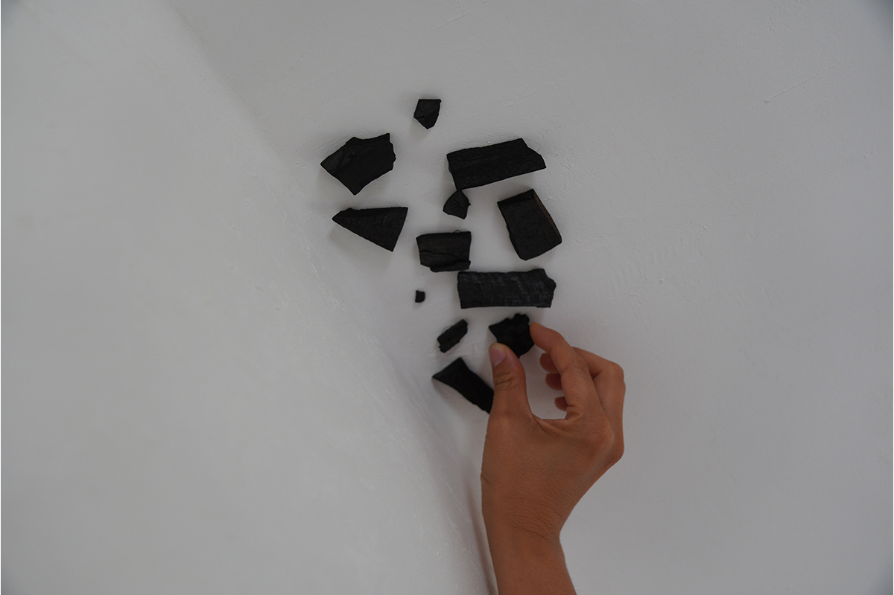

Префектура Нагано · Фудзими · где остановиться
«Кодомари Fuji»: гостиница Тэрунобу Фудзимори, которую строят гости и природа

На холме у границы префектур Нагано и Яманаси стоит дом, который задумали стареть вместе с природой. Его спроектировал Тэрунобу Фудзимори, а достраивать помогали те, кто дал деньги на стройку, и сами гости.
Место
Дом на холме среди гор
«Кодомари Fuji» стоит в городке Фудзими, на возвышенности, на участке площадью 4000 квадратных метров, в деревне недалеко от границы с префектурой Яманаси. Отсюда видны Южные Альпы с горой Каи-Комагатакэ и хребет Яцугатакэ, а на юге из-за холмов выглядывает Фудзи.
Гостиница открылась 20 августа 2023 года и принимает одну компанию гостей в день. Это первое в Японии место для ночлега, построенное по проекту Тэрунобу Фудзимори, архитектора с мировым именем. Главной его заботой было, чтобы дом не спорил с окружающей природой. Высоту крыши подогнали под соседние холмы, стены обшили обожжённой криптомерией, а крышу покрыли медными листами, которые будут меняться с годами, и этого старения здесь ждут с удовольствием.
Архитектура
Сакура на крыше и угольки на потолке
В деревне растёт плакучая сакура, которой около 300 лет. Её считают символом этих мест, и она подсказала Фудзимори главную деталь проекта: на крыше гостиницы посадили деревца сакуры фудзидзакура.
Медную крышу и стены из обожжённой криптомерии собирали не только строители. В работе участвовали люди, которые поддержали стройку через краудфандинг. Архитектура интересна тем, что в ней найдётся работа для любого человека: так считает Фудзимори.
Гостям предлагали приклеить к известковому потолку маленький кусочек угля.

Так и вышло, что дом складывается из многих рук: сакура на крыше, медь и обожжённое дерево от участников краудфандинга, угольки на потолке от гостей. Сельский пейзаж служит ему холстом, а сам дом будто дышит вместе с природой и меняется медленно, год за годом.
Вокруг лежат поля, и пожить среди них в доме, который продолжает расти, это уже достаточная причина для поездки.
Ужин японский, по желанию, завтрак европейский. При гостинице есть небольшая лавка с продуктами. К оплате принимают карты AMEX, Diners, JCB, Mastercard, UC, VISA и другие.
«Кодомари Fuji»
- Адрес
- префектура Нагано, уезд Сува, Фудзими (точный адрес не публикуется)
- Телефон
- не публикуется
- Номера
- 1
- Цены / Вход
- от 66 000 иен за ночь с завтраком в 2023 году (налог и сервисный сбор включены), плюс 8800 иен за каждого взрослого
- Заезд / выезд
- 14:00 / 10:00
- Как добраться
- на машине около 8 минут от съезда Кобутидзава скоростной дороги Тюо, или около 10 минут на такси от станции JR Кобутидзава
- Сайт
- kodomari-fuji.jp